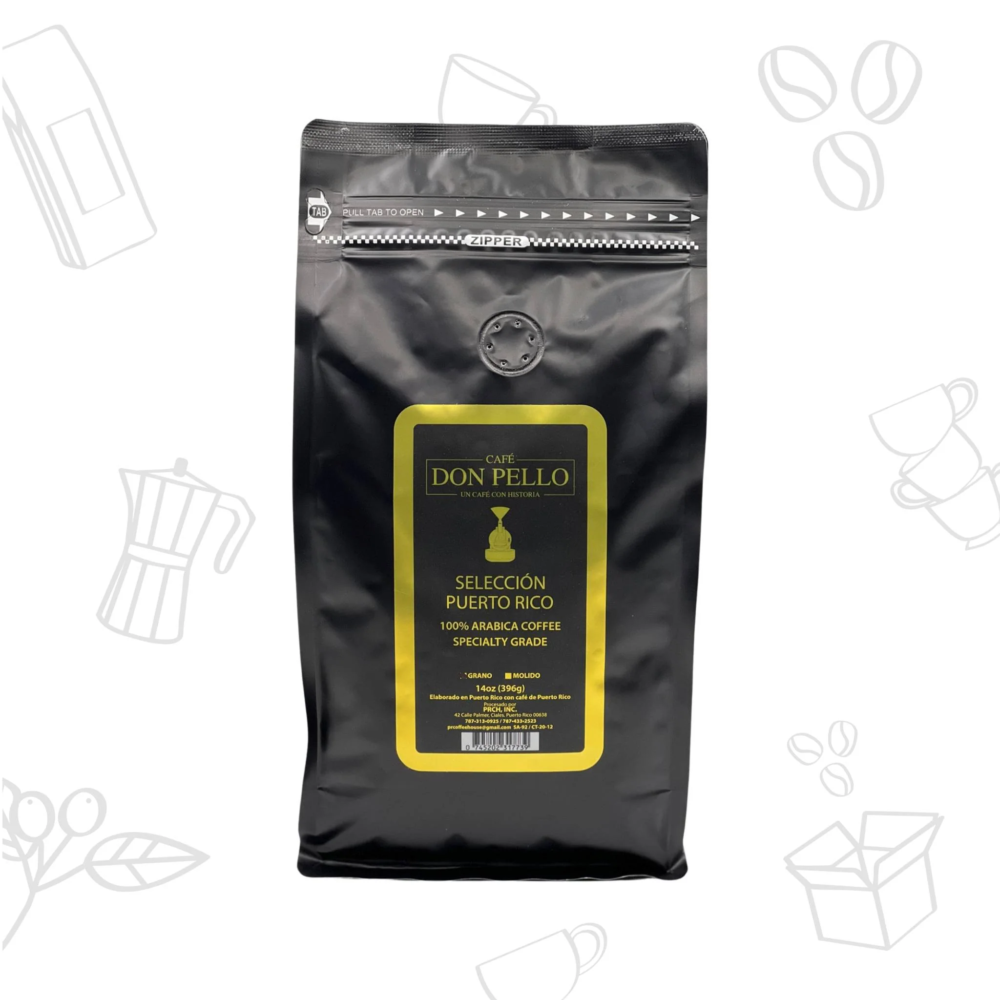
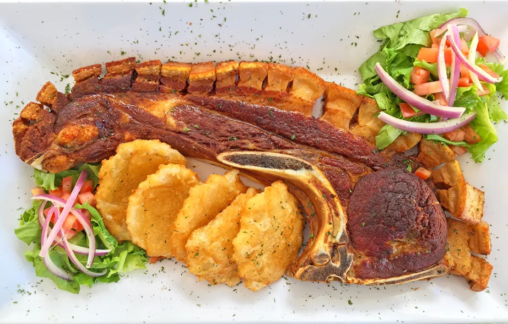
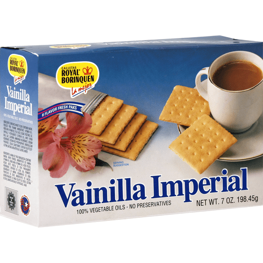

Gastronomía
La gastronomía de Yauco reúne sabores tradicionales puertorriqueños y una fuerte identidad relacionada con el café. El municipio es reconocido por su tradición cafetalera y por la presencia de productos y espacios que resaltan esta herencia.
Además del café, en Yauco pueden encontrarse platos típicos de la cocina criolla, postres, frituras y opciones locales que reflejan la cultura culinaria del sur de Puerto Rico.

Café de Yauco
Yauco es reconocido por la calidad de su café, cultivado en zonas montañosas cercanas. Esta tradición ha sido parte importante de la identidad económica y cultural del municipio.

Gastronomía Local
En Yauco se pueden encontrar platos típicos de la cocina puertorriqueña, como las chuletas kan kan, el arroz con gandules, el mofongo y una variedad de postres y frituras que reflejan la riqueza culinaria de la región.

Sabores y cultura
Royal Borinquen es la marca principal de la Borinquen Biscuit Corporation, una empresa histórica fundada en 1864 en Yauco, Puerto Rico. Es una de las industrias más antiguas y emblemáticas del país, símbolo de tradición y calidad para generaciones de puertorriqueños.